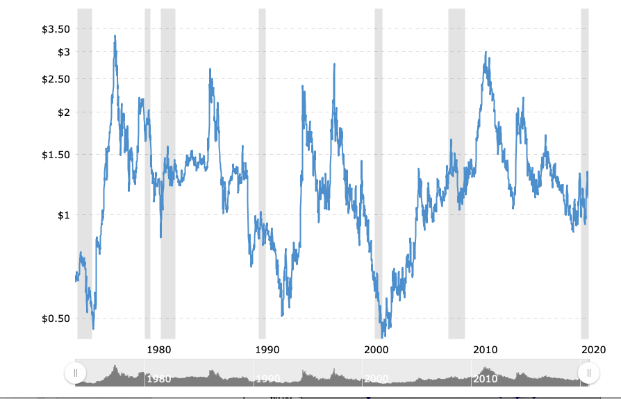
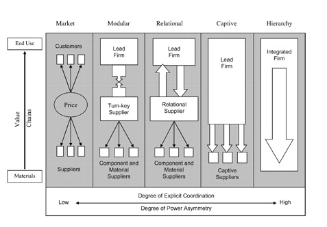

Global Business
INTL-I103 | Day 16 — Private Power Over Supply Chains: Advocacy & Self-Regulation
October 19, 2026
Today’s Plan
Today’s Big Question
When governments can’t or won’t discipline a global firm’s supply chain, who else can — and does “who” change what actually gets fixed?
| Section | What we’ll cover |
|---|---|
| 1 · Two mechanisms, one week | Advocacy/spotlighting vs. corporate self-regulation |
| 2 · Power, authority, autonomy | Why firms are hard to discipline in the first place |
| 3 · Advocacy networks | Keck & Sikkink, spotlighting, and Starbucks vs. Ethiopia (briefly) |
| 4 · Chain governance & self-regulation | The Gereffi typology and why some firms regulate themselves |
| 5 · Setting up Patagonia | What happens when a mission-driven firm audits itself — and still finds a problem |
Two mechanisms, one week
A typology, not a list of cases
This is the first of two weeks asking the same underlying question from different angles: who disciplines an MNE’s supply chain when governments can’t or won’t?
- This week (private power): outside pressure (advocacy/spotlighting) and inside pressure (corporate self-regulation) — two private mechanisms
- In two weeks (public power): government regulation, in the apparel/H&M case
- Next week (a different face of public power): tariffs and trade policy — governments regulating to protect domestic industry, not workers abroad. Don’t conflate the two uses of “public regulation”
The growth of global value chains means MNEs are now global institutions orchestrating long supply chains — responsible for ~80% of global trade and ~15% of all jobs — while remaining legally separated from the suppliers that do the work. That separation is exactly what makes accountability hard, and exactly what today’s two mechanisms try to work around.
Power, authority, autonomy
Why firms are hard to discipline
- Power: A’s ability — through instrumental (e.g., lobbying), structural, or discursive means — to make B do something it otherwise wouldn’t
- Authority: others’ recognition of A’s right to exercise that power
- Autonomy: A’s ability to act independently of others’ control
The configuration of a supply chain determines where these accrue — and thus whether anyone (a government, a consumer, a watchdog) can hold the lead firm to account.
Advocacy networks
A buyer-driven commodity chain: coffee
- Coffee is a commodity — undifferentiated, sold on a global market — and, like many agricultural commodities, a buyer-driven chain
- ~80% of the market is controlled by 5 brands that buy beans but don’t grow them

Growers capture little of the final value
Keck & Sikkink: the spotlight
- Transnational advocacy networks mobilize information and moral pressure across borders, working through spotlighting — making a firm’s conduct visible and costly to its brand
- Brief illustration — Starbucks vs. Ethiopia (2006–07): Ethiopia wanted to trademark its coffee-growing regions to capture more value for farmers; Starbucks initially resisted. A fair-trade advocacy campaign made the dispute costly to Starbucks’s brand, and the two sides settled on a licensing deal
- The point isn’t the specific outcome — it’s the mechanism: would Ethiopia have had this leverage without an advocacy network willing to spotlight the dispute?
Chain governance & self-regulation
Five types of value-chain governance
- Market: low cost of switching partners
- Modular: suppliers make inputs with their own technology
- Relational: high trust, high asset specificity
- Captive: small suppliers dependent on large buyers
- Hierarchy: brought in-house

After Gereffi, Humphrey & Sturgeon
Where a chain sits on this spectrum determines how much leverage the lead firm has — to enforce standards on suppliers, or to credibly claim it’s monitoring them.
When firms regulate themselves
- CSR / self-regulation is private regulation: not encoded in law, but created and enforced through a firm’s own contracts, audits, and codes of conduct
- Villena & Gioia (2020) make the case that the real bottleneck isn’t the firm’s direct (Tier 1) suppliers — it’s the lower-tier suppliers several links removed, who are hardest to see and hardest to audit
- Self-regulation’s credibility problem: a firm is essentially grading its own homework. What would make you trust an audit a company runs on itself?
Setting up Patagonia
A hard test for self-regulation
Patagonia is arguably the best-case scenario for corporate self-regulation: a mission-driven firm, a founding member of the Fair Labor Association, a decade of supplier audits and codes of conduct — genuinely trying.
And yet: in 2019, despite all of that, Patagonia’s own audits found debt bondage among migrant workers at a Tier 1 supplier — years after the company thought it had already solved this exact problem at its Tier 2 mills.
Questions to carry into Wednesday
- If self-regulation fails even at the company trying hardest to make it work, what does that tell you about the other 99% of firms trying less hard?
- Where does public regulation (like California’s transparency law) fit in — is it a backstop, or is it actually doing more of the work than it looks like?
Looking ahead
- Wednesday (Day 17): Patagonia — Tackling Human Trafficking in Global Supply Chains — self-regulation’s best case, tested
Questions?
See you Wednesday.

INTL-I103 | Global Business